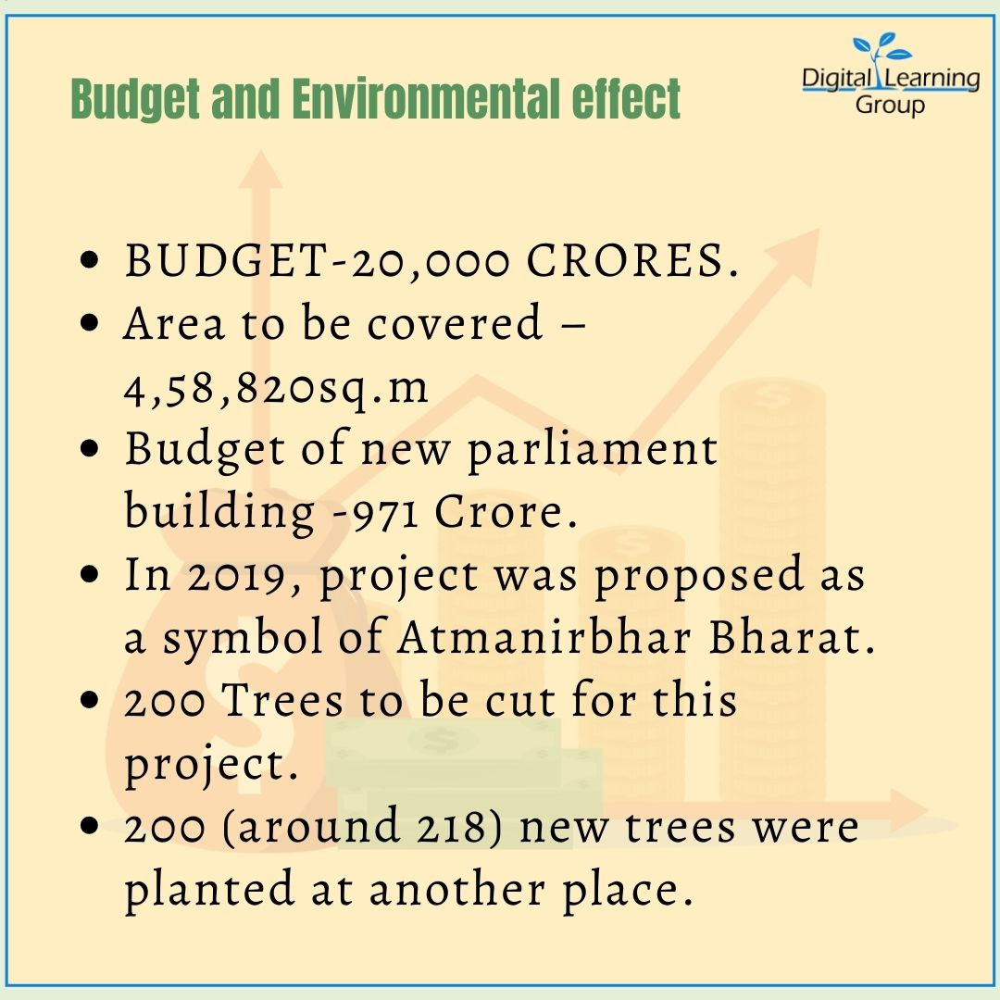

“Central vista : A Need or A compulsion”
Introduction
Vista Redevelopment Project is a ongoing project to redevelopment to revamp the Central Vista, India’s central administrative area located near Raisina Hill, New Delhi. The area was designed by Sir Edwin Lutyens and Sir Herbert Baker during British colonial rule and was retained by Government of India after independence.
However, many people claim that the infrastructure of the building is inspired by Vijay Mandir which is situated in Vidisha, Madhya Pradesh. As the old parliament building was inspired by Chausath Yogini Mandir (Padavli) which is situated in Morena, Madhya Pradesh.
Scheduled between 2020 and 2024, the project as of 2020 aims to revamp a 3 km (1.9 mi) long Raj path between Rashtrapati Bhavan and India Gate, convert North and South Blocks to publicly accessible museums by creating a new common Central Secretariat to house all ministries, a new Parliament building near the present one with increased seating capacity for future expansion.
Why new building?
1. Seating capacity-
Because of increase in population , delimitation can occur in 2026Delimitation- According to population of different regions, redesigning the borders of constituencies

Why is it important?
Because if some states has less population then the value of one vote will not remain 1, for ex- in tamilnadu, 1 constituency have average population of 1.8 million, but UP has population of 3 million, so democratically this is wrong
And in future according to some researches seats should increased to 848 in lok sabha
Against of delimitation-
If some states of south India following family planning very strictly,and that is also a good thing but because of delimitation if their population will less than they will get less seats in lok sabha and states like Bihar those who are not following family planning they will get more seats
2. Old building isn’t earthquake proof
3. old building have very less digital facilities and can’t be modifiable
Against--- of project
1. According to research after 2061 , India’s population will stabilize and began to decrease so what will happen then
2. According to current situation when our GDP is decreasing and ongoing pandaemic, this budget will give a setback to economy
3. this project has no public consultant with public authorities (some of them claim that they got to know about when whole project map is developed)
4. It will decrease public place at that particular area in New Delhi, because this will be reserved for only officials then(atleast 80 acre of area)
The central vista project , is it a neccessity or just an oppulence ??
According to a Solicitor General (SG), the only intention of petitioners is to put an end mark on The Central Vista Project (CVP). The PIL by a few is a façade created to stop the project.
Here are some factual arguments which support that CVP must continue:-
• The CVP is not being built at the expense of India’s fight against covid. Union housing and urban affairs ministry Hardeep Puri said that the government had allocated nearly double of what it would spend on Central Vista Project for the vaccination programme.
• The standalone cost of new Parliament building is rupees 862 crore but why is there not even a squeak about rupees 900 crore that will be spend on revampment of MLA hostel in Mumbai.
• The total project would cost close to rupees 20,000 crore and this expenditure is spread across six years. In larger scheme of things, this is too small to be even subjected to controversy.
• The CVP creates direct and indirect employment for thousands of skilled, semi skilled and. Unskilled workers in these times.
• According to Para 8 of Delhi disaster Management Act of 2005,construction activities during lockdown are permitted. Moreover, the four 400 workers working for CVP were engaged well before Curfew in Delhi and according to Delhi High Court they are staying at the site in a safe, Covid compliant facility.
• It will have digital interface system,will consume significantly less power and survive for following 150 years. And those who are concerned about the loss of cultural heritage they should know that the older structure will be retained as an archaeological asset of country.
• The strength of Lok Sabha and Rajya Sabha are slated to rise by the year 2026, hence to accommodate parliamentarians in future the CVP must continue.
• The CVP will have a defence Enclave comprising three buildings, with offices of the Ministry of Defence, the chief of Defence staff and three service chiefs with special security arrangements. There will be total office space for 52,300 people and parking for almost 10,000 vehicles in basements.
Why does the controversy around the Central Vista Project refuses to die?
In this segment of the Big Story, we deep dive into what makes the government’s ambitious project a contentious one.
Defying all criticisms, construction work for the controversial Central Vista re-development project has been going on in Delhi through the thick of the pandemic. This 2.8-billion-rupee worth project, which has been touted by critics as the Modi government’s “vanity project”, is going on under what the government has defined as “essential services”.
While initial legal battles to stop this project was unsuccessful, as the Supreme Court gave its green signal, there is another petition that is being heard at the Delhi High Court that seeks to temporarily halt the construction activities owing to the pandemic.
Although the petitioners have raised concerns over the impact of this move on the construction workers and Delhi’s COVID situation, the Centre has called the PIL a “façade” and an attempt to stall the project.
The NDA government has been facing stiff opposition from several quarters for going ahead with the Central Vista Redevelopment Project amid the raging COVID-19 pandemic.The Opposition leaders urged the government to scrap the project and divert the funds to efforts dealing with the coronavirus crisis.
At the same time, conservationists said that the revamp ik will meddle with the history of the current building, which was designed by Edwin Lutyens. The 1927 building will be a lost heritage, they said.
The environmentalists claim that the Central Vista Project poses a big threat to the environment. Many civil society groups and environmental organizations’ have appealed to the Centre to stop the “ambitious Central Vista Redevelopment Project”, at least till the pandemic is over.
The statement was issued by 65 organization’s, on urging the central government to pause the
Rs 13,450 crore project and divert all available resources towards the handling of the pandemic.